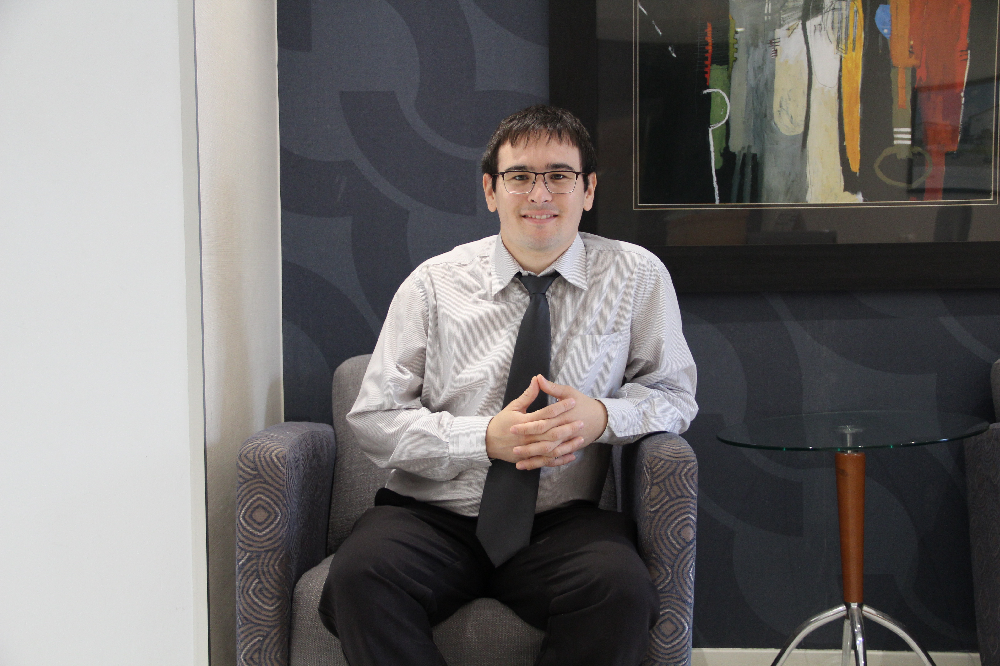

Schalk de Beer

SoftWare developer
South Africa, Guateng
Schalkiedb@gmail.com
0834105682
Linkedin Profile
Biography
My name is Schalk de Beer, I am Technical developer with 23years of software experience. I started my development career in 2014 working on the frond end. I moved into the backend development in 2020.
I have deep passion for building and tinkering with software. The continuous change in development enviroment and methods of building software is what motivates me to keep improving myself and stay update with the trends
I would like to continue with my career and studies and have a smooth tranistion into the cloud development space at work
Skills
- Excel
- Microsoft Word
- C#
- HTML
- CSS
- Javascript
- Python
- CaseWare Idea
- Postman
- Api's To different databases
- XBRL
- XML
- My SQL
- SQL server
- CaseWare Working Papers- SME, IFRS, GRAP, SAIPA, IPSAS, Audit International,MCS, MSCOA
- CaseWare Corporate Tax Module
- Caseview development on above templates
- QTest
- CaseWare Smart Sync
- CaseWare Interactive Dashboard
- Bizsuite
- CaseWare Connector
- Confirmations
- Probe Compilation, Review and Audit Methodology
- Salesforce
- Jira
- Confluence
- Product Manager/Product Owner SAFE 3.0 Certificate
- On-Time
- Pastel Partner 2004, 2005, 2007, 2009, V11, V12
- Pastel Xpress 2004, 2005, 2007, 2009, V11, V12
- Pastel My Invoicing
- Pastel Evolution Basic Practioner
- Delphi 7 programming